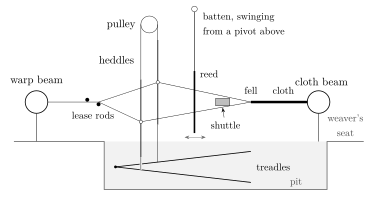
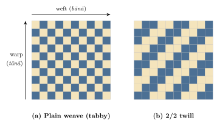
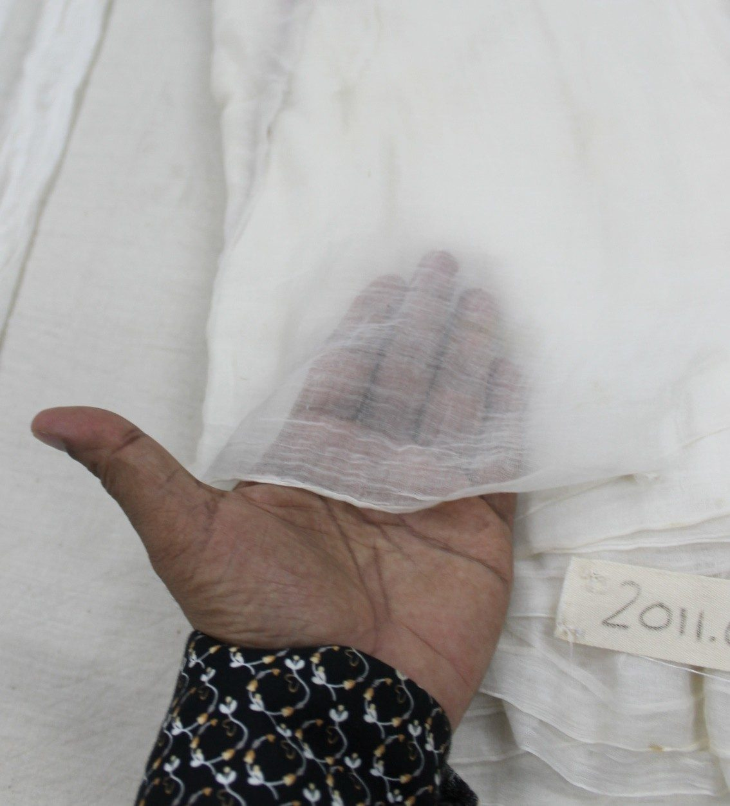
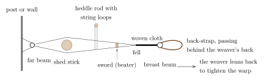
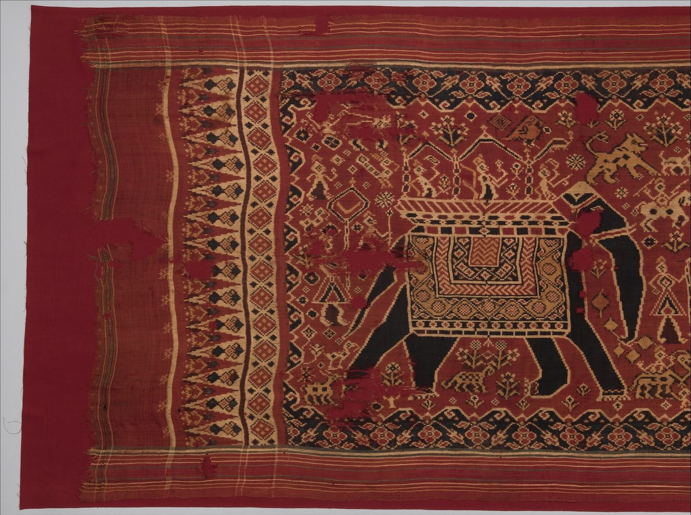
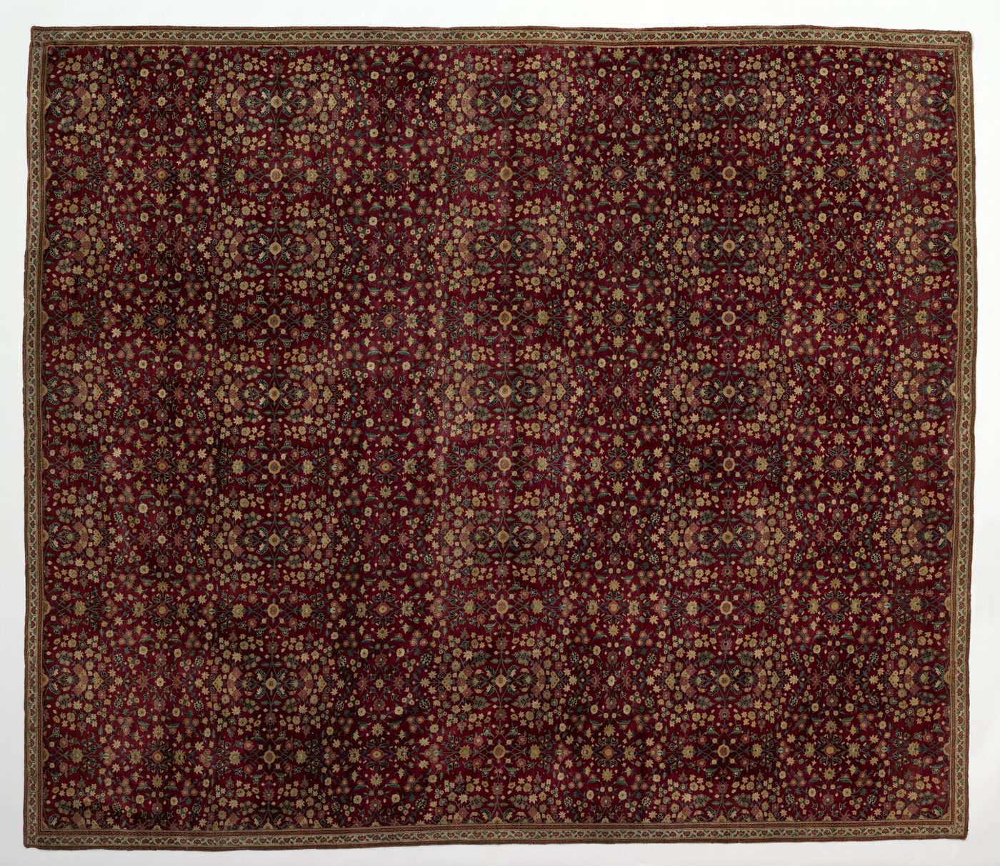

Chapter 4: Vastra: Fibres, Looms and Woven Traditions¶
For most of recorded history, textiles were the most important manufactured goods of the Indian subcontinent, both for its own people and for its trade. Indian cottons, silks and woollens were made in an extraordinary variety of qualities, from coarse cloth for daily wear to muslins of legendary fineness, brocades woven with gold, and shawls of goat-hair so fine that they were compared to cobwebs. This chapter describes the fibres, the looms and the main woven traditions; the next deals with dyeing, printing and the global trade in Indian printed cottons.
The history of Indian textiles is sometimes told in heroic terms: India “clothed the world”. The phrase is the title of a scholarly book (Riello and Roy 2009), but its authors use it carefully. Indian cottons were indeed traded from East Africa to Japan and, from the seventeenth century, to Europe, West Africa and the Americas; but they were one part of a global textile economy that also included Chinese silks, Middle Eastern and European woollens and, later, British factory cloth. The achievements described below are remarkable enough without exaggeration.
4.1 Fibres¶
4.1.1 Cotton¶
Cotton (Sanskrit karpāsa, kārpāsa) was domesticated in South Asia, and independently in the Americas. Among the earliest known evidence of its use anywhere comes from Mehrgarh in Baluchistan, where cotton fibres were found mineralised inside a copper bead from a burial dated to about the sixth millennium BCE (Moulherat et al. 2002). At Mohenjo-daro, fragments of cotton cloth survived because they were preserved by contact with a silver vessel. The cottons of the Old World, Gossypium arboreum and G. herbaceum, are distinct from the New World species from which most modern cotton is grown.
Classical authors knew Indian cotton as a marvel. Herodotus (3.106), writing in the fifth century BCE, reports that in India wild trees bear a wool finer than that of sheep, from which the Indians make their clothes. The Arthaśāstra (2.11) lists the regions that produce the best cotton cloth, among them Madhurā (Madurai), Aparānta (the western coast), Kaliṅga, Kāśī, Vaṅga, Vatsa and Mahiṣa, and distinguishes several kinds of fine cloth (dukūla, kṣauma) produced in Bengal and elsewhere (Kangle 1960–1965). The Periplus (mid-first century CE) names many grades of Indian cotton cloth exported from the ports of western and eastern India, including the finest muslins “called Gangetic” (Casson 1989). Pliny the Elder complained that India drained the Roman Empire of fifty million sesterces a year (Natural History 6.101), though he had in mind all luxury imports, of which pepper and gems were at least as important as cloth.
4.1.2 Silk¶
India has both cultivated and “wild” silks. Silk was long thought to have reached India from China, but analysis of fibres from Harappa and Chanhudaro has identified silk from wild Indian silk moths in Indus contexts of the mid-third millennium BCE (Good et al. 2009). The domesticated mulberry silkworm, Bombyx mori, is of Chinese origin, and Chinese silk was imported into India from early times (Sanskrit cīnāṃśuka, “Chinese cloth”); sericulture with Bombyx mori became important in Bengal and later in Mysore and Kashmir. The wild silks include:
-
Tasar (Antheraea mylitta), reared on asan (Terminalia) and arjun trees in the forests of Jharkhand, Chhattisgarh, Odisha and Bihar, largely by Ādivāsī communities.
-
Mugā (Antheraea assamensis), the golden silk of Assam, reared on som and soālu trees.
-
Erī (Samia ricini), reared on castor leaves in Assam and the North-East. Its cocoon is open at one end, so it is spun rather than reeled, and the cocoon can be used after the moth has emerged (Section 4.10).
4.1.3 Wool and Other Fibres¶
Sheep’s wool was woven in the north-west and the hills; the woolly ewes of the Gandhāris are already mentioned in the Ṛgveda (1.126.7), and woollen blankets of the north-west in later texts. The finest wool is the under-fleece of the Changthangi goat of Ladakh and the Tibetan plateau, known as pashm or pashmina (Chapter 12). Bast fibres such as jute, hemp, flax (kṣauma, a word later used for fine linen-like cloth) and ramie, and leaf fibres such as those of the pineapple and banana, were also used.
4.2 Cloth in Sculpture and Painting¶
Because so little early cloth survives, much of what we know about Indian textiles before the medieval period comes from images. The sculptures of Bharhut, Sanchi, Mathurā and Amarāvatī show men and women in draped garments, the lower cloth wrapped around the waist and legs, the upper cloth over the shoulders, with turbans, sashes and finely pleated hems; Kuṣāṇa sculptures from Mathurā show the clinging, transparent cloth for which the region was famous. The paintings of Ajanta show patterned textiles, some of which have been interpreted as tie-dyed or resist-dyed, and garments of many cuts, including stitched jackets and tunics worn by servants, soldiers and foreigners. Later sculpture and painting record changing fashions, such as the stitched garments introduced or popularised under the Sultanates and Mughals, the jāmā and pājāmā, which became general among men of the north Indian elite. Such images must be read with caution, since artists followed conventions, but they show that the history of Indian dress was one of constant change.
4.3 Weaving in Language and Thought¶
Weaving left deep marks on Indian languages and ideas. Several of the most important words of Sanskrit learning are weaving terms: sūtra, “thread”, became the name for a concise rule or a text composed of such rules; tantra, from the root tan-, “to stretch”, originally meant the warp or the loom; and the poet of a Vedic hymn confesses that he does not understand “either the warp or the woof” of the ritual that others weave (RV 6.9.2) (Jamison and Brereton 2014). The sacrifice itself is often described as a fabric that the priests stretch and weave. In the Bṛhadāraṇyaka Upaniṣad (3.6), the philosopher Gārgī Vācaknavī asks Yājñavalkya on what the whole world is “woven, warp and woof” (otaṃ ca protaṃ ca), and pursues the question from water to the worlds of the gods until he warns her not to ask too much. Weaving thus provided a model for the order of the world and of knowledge.
4.4 Spinning and Weaving¶
4.4.1 Spinning¶
Cotton was cleaned with a roller gin (charkhī), opened with a bow (the carder’s bow, whose plucked string fluffs the fibres), and spun with a spindle or, later, a spinning wheel (charkhā). The spinning wheel appears in India in the early second millennium CE, probably from the Islamic world; Irfan Habib, who has assembled the evidence, connects its spread with the Delhi Sultanate in the thirteenth and fourteenth centuries (Habib 2008). Spinning was largely women’s work, done at home; the Arthaśāstra’s superintendent of yarn was to give spinning work to widows, women with disabilities, women ascetics, old servants of the king and others who needed a livelihood, and to pay them according to the quality of their yarn (2.23) (Kangle 1960–1965).
4.4.2 Looms¶
Indian weavers used several kinds of loom. The horizontal pit loom, in which the weaver sits with his legs in a pit below the cloth and works the treadles with his feet, was the standard loom of much of India. The back-strap loom, in which the weaver tensions the warp with a strap around her back, is still used by many peoples of the North-East. For patterned silks and brocades, the drawloom was used: a second set of cords, the pattern harness (jālā or naqsha), allowed a drawboy sitting above the loom to raise particular groups of warp threads for each pick, so that a complex design could be repeated. The pattern harness, in effect, stores the design; Joseph-Marie Jacquard’s mechanism, developed in France in the early 1800s, automated the same task with punched cards. Jacquard attachments were adopted in Banaras and other centres in the early twentieth century.
4.4.3 Preparing the Warp¶
Much of the work of weaving is done before the shuttle is thrown, and much of it was done by members of the weaver’s household other than the weaver. Hand-spun or mill yarn arrived in skeins. It was wound onto bobbins and, for the weft, onto small quills that fit inside the shuttle, using a winding wheel. This work fell largely to women and children (Section 13.7). The warp (Hindi tānā) was then laid out. In the weaving villages of south India this is still often done in the open street in the early morning. The warper walks up and down between rows of sticks set in the ground, laying out a warp long enough for several saris, and keeps the “lease”, the crossing of alternate threads that holds them in order. Cotton warps were sized, brushed with a thin starch paste, usually of rice, to strengthen and smooth the threads against the friction of the loom, and then dried in the sun while stretched out. The rows of sized warps along a village street are among the most characteristic sights of handloom country.
The prepared warp is wound onto the warp beam at the back of the loom. Each thread is then passed in order through the eye of a heddle and between the teeth (“dents”) of the reed, a comb-like frame of split bamboo or cane slips, today usually of steel, which keeps the threads evenly spaced and beats each new weft into place. This “drawing-in” is slow and exacting. When a new warp is to be woven in the same arrangement as the old, its threads are usually twisted or knotted one by one onto the ends of the old warp still in the loom, and pulled through. In many centres this was the work of specialists who went from house to house. The weft (Hindi bānā) is the thread carried across the warp by the shuttle. The pair tānā-bānā, warp and weft, is a common Hindi and Urdu figure for the interwoven fabric of a society.

4.4.4 At the Loom¶
Weaving itself repeats three motions (Figure 4.1). The weaver presses a treadle, which lifts one set of warp threads and lowers the other, opening a “shed”. Then he throws the shuttle through the shed, laying a pick of weft. Last, he pulls the reed, set in a swinging frame (the batten), to beat the pick against the edge of the cloth, the fell. With a simple throw-shuttle, the weaver passed the shuttle from hand to hand, so that the width of the cloth was limited by the reach of his arms. Plain cloth needs only two heddles. Twills (Figure 4.2), small repeating figures and borders need more heddles or extra lifting devices. Figured motifs that do not repeat across the width, like the jāmdānī and the Banaras kaḍhuā described below, were inserted by hand, motif by motif, as discontinuous supplementary wefts.

4.4.5 Counts and Fineness¶
The fineness of yarn and cloth was measured in several ways. Since the nineteenth century, yarn has usually been described by its “count”. In the English system for cotton this is the number of hanks of 840 yards needed to weigh one pound, so that a higher count means a finer yarn. Everyday handloom cloth is commonly woven from yarns in the range of about 20s to 80s, and fine muslins and jāmdānīs from much higher counts. Cloth was also graded by the density of the warp. On the Coromandel coast, company contracts specified the fineness of a piece by the number of punjams in its warp, each of which is usually given as 120 threads. Reeds are graded in the same way, by the number of dents to a given width. Claims about the fineness of historic Dhaka muslin, sometimes expressed in counts far beyond any modern yarn, cannot be checked against surviving cloth and should be treated with caution (Section 4.7).
4.4.6 New Looms¶
The fly-shuttle, invented by John Kay in England in 1733, sends the shuttle across the warp by a jerk on a cord attached to pickers at either side. It lets one weaver weave wider cloth, faster. It spread in India from the late nineteenth century and especially in the early twentieth, promoted by provincial departments of industries, weaving schools and the Svadeśī movement. Tirthankar Roy has shown that its adoption was one of the ways in which handloom weavers raised their productivity and held their ground against the mills (Roy 1999). Wooden frame looms, standing on the floor, replaced pit looms in many places, and dobby attachments, which lift the heddles in a programmed sequence for small repeating patterns, came into wide use alongside the Jacquard. Each change altered the division of labour within the household and the skills a weaver needed. None of them made the loom less of a hand tool.
4.5 The Names of Cloth in Trade¶
The trade in Indian textiles produced a large vocabulary, much of it Indian or Persian in origin, which passed into European languages. Company lists distinguish dozens of kinds of cloth by region, width, length, fineness and finish (Chaudhuri 1978; Riello and Roy 2009). Among the most common were:
- Calico
- A general term for plain cotton cloth, from Calicut.
- Baftas
- Plain cottons, especially from Gujarat and Bengal (Persian bāfta, “woven”).
- Mulmuls and muslins
- Fine light cottons, especially from Bengal (Hindi malmal); the English word muslin, from Mosul, was applied to them.
- Salampores and longcloth
- Plain cottons of the Coromandel coast, often exported white or dyed blue.
- Chintz and palampores
- Painted and printed cottons, the latter large hangings or bed-covers (Chapter 5).
- Guinea cloth
- Blue or striped cottons made for the West African trade.
- Ginghams, dungarees, bandannas, seersuckers
- Words for striped, coarse, tie-dyed and puckered cloths that entered English from Malay, Hindi, Persian and other languages through the textile trade.
The European cotton industry learned not only techniques but also products and fashions from India, and the names outlasted the Indian origin of the cloths themselves.
4.6 Cotton Growing and Spinning Regions¶
Cotton was grown in many parts of India, but some regions were especially important: Gujarat and Khandesh in the west, the black-soil plains of Berar and the Deccan, the Coromandel hinterland and parts of Bengal. Indian cottons were mostly short-stapled varieties of the Old World species, well suited to hand-spinning; the long-staple American cottons that British mills preferred were introduced in the nineteenth century with mixed success. Particular cotton varieties were associated with particular cloths, as phuṭi kārpās with Dhaka muslin. Spinning was done in almost every rural household, and the yarn was sold to weavers in local markets or through merchants. The decline of hand-spinning in the nineteenth century, when weavers turned to cheap mill yarn, deprived millions of women of an important source of income, a loss that Gandhi sought to reverse through khādī (Chapter 14).
4.7 The Muslins of Bengal¶
The finest cotton cloths of the subcontinent were the muslins of Bengal, especially those of Dhaka (Dacca) and its region. Under the Mughals Dhaka was the centre of a production of fine muslins for the imperial court and for export; the finest qualities were reserved for the court. Persian names for different qualities, such as malmal-i khāṣ (“royal muslin”), ābrawān (“running water”), shabnam (“dew”) and baft-i hawā (“woven air”), were recorded by nineteenth-century writers. How transparent such cloth could be is shown in Figure 4.3.


The fineness of Dhaka muslin depended on a local cotton, phuṭi kārpās (a form of Gossypium arboreum), grown along the Meghna river; on careful cleaning of the fibre, traditionally with the jaw-bone of the boāl fish; on the extraordinary skill of the women who spun it on fine spindles, often in the humid early morning when the fibre was least brittle; and on the skill of the weavers. Stories that a whole muslin turban could be drawn through a finger-ring belong to the folklore of fine cloth; so does the story that the finest muslins were woven with the weavers’ fingernails.
The industry declined in the late eighteenth and early nineteenth centuries, after the end of Mughal court demand, under the coercive purchasing practices of the East India Company, and in the face of competition from British machine-made cloth. The widely repeated story that the Company cut off the thumbs of muslin weavers rests on a misreading of an eighteenth-century account and is discussed in Chapter 14.
Scholarly Note: Muslin and Jamdani Today
Since the 2010s, researchers and craftspeople in Bangladesh have tried to identify surviving plants of phuṭi kārpās, by comparison with old herbarium specimens, and to re-create muslin of very high count; the work is promising but small in scale. Bangladesh registered “Dhakai muslin” as a Geographical Indication in 2020. The related figured technique of jāmdānī, in which the motifs are inserted by hand as discontinuous supplementary wefts into a fine cotton ground, continues as a living craft around Dhaka and in West Bengal. It was “the traditional art of Jamdani weaving”, not muslin, that UNESCO inscribed on the Representative List of the Intangible Cultural Heritage of Humanity in 2013, on the nomination of Bangladesh.
4.8 Silk Weaving Traditions¶
4.8.1 Banaras¶
Banaras (Varanasi) has been a centre of silk and gold-thread weaving since at least the Mughal period. Its brocades (kimkhāb), in which the pattern is formed by extra wefts of gold or silver thread (zarī), and its silk saris with figured borders and end-pieces, are woven in workshops and homes by a largely Muslim community of weavers (Julāhā or Anṣārī), working for Hindu and Muslim merchants. Techniques include jangla (all-over scrolling floral patterns), mīnākārī (coloured silk wefts outlining or filling zarī motifs), kaḍhuā (each motif woven separately with its own extra weft, so that there are no floats on the back) and tanchoi, a satin-weave fabric patterned in several coloured wefts, said to have been introduced from China through the Parsi merchants of Surat. Nita Kumar’s study of Banaras artisans describes the culture of leisure, pride and piety that sustained the weavers through economic hardship (Kumar 1988).
4.8.2 Kāñcīpuram and the South¶
Kāñcīpuram (Kanchipuram) in Tamil Nadu is the best known of the south Indian silk-weaving centres. Its heavy silk saris have contrasting borders and end-pieces, often in gold zarī. In the korvai technique, the borders are woven in a different colour from the body by interlocking separate wefts at the junction, and the end-piece may be joined to the body by a further interlocking technique. The weavers belong largely to the Devāṅga and Sāliya communities and to the Kaikkōḷar (Sengunthar), a Tamil weaving caste whose history as warriors, weavers and merchants has been studied by Mattison Mines (Mines 1984). Other important southern centres include Dharmavaram, Arani, Mysore and Molakalmuru.
4.8.3 Other Silk Traditions¶
Bengal produced the figured bālucharī saris of Murshidabad and Bishnupur, with narrative scenes in their end-pieces; Maharashtra the paiṭhaṇī of Paithan and Yeola, with tapestry-woven borders; Gujarat and Rajasthan the mashrū (silk and cotton satin) of Patan and other towns. Mashrū (“permitted”) cloth, with a silk face and cotton back, was traditionally associated with Muslim patrons who, according to one interpretation, avoided pure silk next to the skin.
4.8.4 Bengal Silk and the Company Trade¶
Bengal was the largest producer of mulberry silk in India in the seventeenth and eighteenth centuries. Raw silk from the districts around Murshidabad and Kasimbazar was exported by Indian, Armenian and European merchants, and silk piece-goods were woven for markets in India, West Asia and Europe. The East India Company invested heavily in Bengal silk and introduced Italian methods of reeling in the 1770s, using filatures in which silk-winders worked under close supervision; the coercion of these winders is part of the background to the myth discussed in Chapter 14.
4.8.5 The Mughal Wardrobe¶
The Mughal emperors maintained imperial workshops (kārkhāna) and a wardrobe (toshakhāna) where textiles were made, stored and distributed as robes of honour. Abu’l Fazl’s Āʾīn-i Akbarī (c. 1590s) describes Akbar’s interest in fine cloth and shawls, the kinds of textiles kept in the imperial wardrobe with their prices, and the encouragement given to weavers from Persia, Central Asia and elsewhere to work in India (Abu’l Fazl 1873). The French physician François Bernier, who lived in India in the 1650s and 1660s, described large halls in the Delhi fort where embroiderers, goldsmiths, painters, lacquer-workers, joiners, tailors, and makers of silk and brocade worked under the eye of supervisors, paid by the court (Bernier 1891).
4.9 Regional Handloom Traditions¶
Besides the famous silks, every region of India has handloom traditions of everyday and festive cotton cloth, many of them still alive. A few examples must stand for many:
- Bengal
- The fine cotton saris of Shantipur, Phulia and Dhaniakhali, and the ṭāṅgāil saris, a style brought to West Bengal by weavers who migrated from Tangail in East Bengal after Partition; the figured jāmdānī.
- Odisha
- The bandha ikat saris of Sambalpur and Bargarh, and the cotton saris of Berhampur and other centres.
- Andhra Pradesh and Telangana
- The fine cottons of Venkatagiri, the jāmdānī-like Uppada saris, the cotton and silk saris of Narayanpet and Gadwal (with silk borders joined to cotton bodies), and the ikats of Pochampally.
- Karnataka and Maharashtra
- The Ilkal sari, whose silk end-piece is attached to the cotton body by an interlocking technique, and the cotton saris of Maharashtra worn in the nine-yard style.
- Kerala and Tamil Nadu
- The off-white Kerala cloth with gold borders (kasavu) woven at Balaramapuram and elsewhere; the checked and striped cotton saris of Chettinad and Madurai.
- Rajasthan
- The koṭā ḍoriyā of Kota, a light, open-weave fabric of cotton and silk woven in small square checks.
- Madhya Pradesh
- The light silk-and-cotton fabrics of Chanderi and Maheshwar (Chapter 12).
- The North-East
- The mekhelā-chādar of Assam, the phanek of Manipur and the puan of Mizoram, woven by women (Section 4.10 and Chapter 12).
Woollen weaving is also widespread. The shepherd castes of the Deccan, such as the Kuruba and Dhangar, weave coarse black blankets (kambaḷi) of sheep’s wool; the Gaddī shepherds of Himachal Pradesh, the Bhoṭiyā of Uttarakhand and the weavers of Kutch and western Rajasthan make woollen shawls, blankets and rugs; and the woollen paṭṭū cloth of Ladakh is woven by men on narrow looms.
4.10 Silk and the Loom in Assam and the North-East¶
The Brahmaputra valley and the hills around it form a textile region with its own logic. Over much of India weaving was the hereditary occupation of particular castes and the loom was worked by men; in Assam, Manipur and the hill societies of the North-East, weaving was a skill expected of almost every woman, practised at home for the household as well as for sale. The region is also the home of two of India’s native silks, mugā and erī, which are produced in quantity nowhere else. This section deals with materials and techniques; the social meanings of Naga, Mizo, Bodo and other hill textiles are discussed in Volume 23, Jana–Jāti.
4.10.1 Early Notices¶
The cloth of Kāmarūpa, as early Assam was called, appears in a few early sources. The Arthaśāstra (2.11) names Suvarṇakuḍya, together with Magadha and Puṇḍra, as a source of patrorṇā, “leaf-wool”, apparently a silk spun by caterpillars feeding on the leaves of trees, and describes the dukūla of Suvarṇakuḍya as sun-coloured. Some historians place Suvarṇakuḍya in Kāmarūpa and see here an early reference to golden mugā; the identification is possible but uncertain (Kangle 1960–1965). Firmer ground is Bāṇa’s Harṣacarita (seventh century), which lists among the presents sent to Harṣa by Bhāskaravarman, king of Kāmarūpa, fine cloths, cane-work and books written on leaves made from aloe-wood bark (Cowell and Thomas 1897). Under the Ahom kings (1228–1826), whose service system grouped their subjects into units (khel), some of them occupational, mugā and pāṭ were worn at court and by the nobility, and silk-rearing and weaving were widespread household occupations (Gait 1906).
4.10.2 Mugā¶
Mugā is spun by Antheraea assamensis, a moth of the Brahmaputra valley and its fringes, and is only partly domesticated. The caterpillars are reared out of doors on som (Persea bombycina) and soālu (Litsea) trees, which the rearers plant and keep pruned to a manageable height. They must be guarded day and night against birds, wasps and other predators, and moved by hand to fresh trees when the leaves are exhausted. When ready to spin, the caterpillars come down the trunk and are gathered into bundles of dry leaves or twigs, where they make their cocoons. Unlike erī, mugā cocoons are reeled: they are cooked in an alkaline solution to soften the gum, and the filaments of several cocoons are drawn off together on a simple hand reel. The yarn has a natural golden-brown colour and is usually left undyed; it is strong and durable, and its lustre is said to improve with washing and wear. Because rearing depends on outdoor trees and on the climate of the valley, production has remained small and is vulnerable to pests, pollution and unseasonable weather. Mugā silk of Assam is a registered Geographical Indication.
4.10.3 Erī¶
Erī (from Assamese erā, the castor plant) is the silk of the fully domesticated Samia ricini, reared indoors on castor leaves and on a few other plants such as keseru (Heteropanax fragrans). Rearing is a household task, done mostly by women, among the Bodo, Mising, Rabha, Karbi and other communities of the plains and foothills, and among the Khasi and Garo of Meghalaya. Because the moth leaves the cocoon through an open end, the filament cannot be reeled; the cocoons are boiled to remove the gum and the fibre is spun by hand, traditionally on a simple drop spindle (ṭakurī). The result is a soft, slightly irregular yarn with the warmth of wool, woven into heavy wrappers and winter shawls. Erī is now marketed as “peace” or “ahiṃsā” silk because the cocoon can be used after the moth has emerged. In the rearing communities, however, the pupae have long been eaten as food, and cocoons are often cut open for that purpose before the moth emerges.
4.10.4 Pāṭ and Sualkuchi¶
Pāṭ is mulberry silk (Bombyx mori), white or pale cream, reeled and woven into the finest Assamese garments. Its main weaving centre is Sualkuchi, on the north bank of the Brahmaputra west of Guwahati, which is the one place in the valley where silk-weaving became a full-time commercial industry rather than a household occupation. Weaving there was historically the work of hereditary weaver families, and men as well as women work at the loom; since the late twentieth century the workshops have also employed hired weavers from outside the town. Sualkuchi produces mekhelā-chādar, saris and other garments in pāṭ and mugā, with supplementary-weft motifs in coloured silk or zarī, many of them now raised with Jacquard attachments. Much of the mulberry yarn now comes from outside Assam, and cheaper imitations woven elsewhere compete with Sualkuchi’s cloth, problems shared with other silk centres.
4.10.5 The Household Loom¶
Outside Sualkuchi, Assamese weaving was a domestic art. A frame loom with a throw shuttle (Assamese tāt) stood in or beside most houses, and girls learned to spin and weave from their mothers; skill at the loom was traditionally counted among the accomplishments of a marriageable woman. Patterns are made by picking up warp threads with a slender bamboo stick, or by storing the pattern on a set of pattern-sticks behind the heddles, so that motifs of flowers, birds, trees and geometric forms are woven in supplementary weft. Weavers carry a repertoire of designs in memory and copy new ones from older cloths. The most widely woven Assamese cloth is the gāmochā, a white cotton cloth with red borders and woven red motifs, used as a towel, a scarf and a ritual cover. It is given to elders and guests at the spring festival of Bohāg Bihu, when the cloth woven for the occasion is called bihuwān. In the Bodo households of lower Assam, women weave the dokhonā, the wrapped garment of Bodo women, on the same household looms (Volume 23).
4.10.6 Manipur¶
In the Imphal valley, weaving is likewise the work of Meitei women, at home and increasingly in cooperatives, on both the back-strap loom and frame looms fitted with the fly-shuttle. The women’s wrap-skirt (phanek), usually horizontally striped and finished with a separately woven or embroidered border, and the upper wrap (inaphi) are the basic garments. Among the patterned cloths, the moirāng phī, named after the old principality of Moirang, has borders of serrated, triangular motifs; it and several other Manipuri cloths are registered Geographical Indications. The water-reed basketry of Manipur is mentioned in Chapter 12.
4.10.7 The Back-Strap Loom¶
In the hills, from Arunachal Pradesh to Mizoram and Tripura, the characteristic loom is the back-strap or loin loom. It has no frame (Figure 4.4). The warp is stretched between a beam tied to a wall or post and a breast-beam at the weaver’s waist; a strap passing behind her back keeps the warp taut, and she controls the tension by leaning forward or back. A heddle rod and a shed stick open the two sheds, and a heavy wooden sword beats in each weft. The loom can be rolled up and carried, and set up on a veranda when household and field work allow. Its width is limited by the reach of the weaver’s arms, so that larger cloths, such as most Naga shawls, are made of two or three narrow panels sewn together. The cloths are often warp-faced: stripes and bands in the warp carry much of the design, and further patterns are added in supplementary weft, in embroidery or, in a few cases such as the Ao warrior’s shawl, by painting.

Before mill yarn, cotton was grown in the hill fields and cleaned, bowed and spun by the women who wove it. It was dyed with local plants: blue from the leaves of Strobilanthes, the indigo-yielding shrub of the eastern Himalaya, red from the roots of species of Rubia, and other colours from barks and leaves. Since the later twentieth century, commercially spun and dyed yarn, including acrylic, has largely replaced home-grown cotton and plant dyes, and frame looms and power looms now reproduce community designs. These changes have raised questions, discussed in Volume 23, about who may weave and sell the designs that identify a particular community.
4.11 Ikat¶
In ikat (a Malay-Indonesian word adopted in English), the yarns are tied and dyed before weaving, so that the pattern is formed in the threads themselves. India has three major ikat regions.
- Gujarat: paṭolā
- The silk paṭolā of Patan are double ikats, in which both warp and weft are resist-dyed in precisely calculated sections so that the pattern appears when they cross. They are woven by a few families of the Sālvī community. Paṭolā were exported to Southeast Asia from at least the sixteenth century, where they became royal and ceremonial heirlooms (Figure 4.5) and were imitated in local textiles (Bühler and Fischer 1979; Guy 1998). In Gujarat a paṭolā sari was traditionally part of a bride’s trousseau in several communities.
- Odisha: bandha
- The single and double ikats of western Odisha (Sambalpur, Bargarh) and of coastal Odisha (Nuapatna) include temple cloths inscribed with verses of the Gītagovinda, woven for the Jagannātha temple at Puri.
- Telangana and Andhra: Pochampally and Chirala
- The cotton and silk ikats of Pochampally and its neighbouring villages, and the double-ikat telia rumāl (oiled cloth) formerly made at Chirala and Puttapaka, which were exported as head-cloths and lungis to the Gulf and Burma.


4.12 Carpets¶
Knotted pile carpets, in which short lengths of wool or silk are tied around pairs of warp threads to form a dense pile, were introduced into India from Iran and Central Asia. Flat-woven cotton rugs (darī) and felts were older. Carpet-weaving was established in the Mughal imperial workshops at Lahore, Agra and Fatehpur Sikri in the late sixteenth century, and Mughal carpets of the seventeenth century, with their naturalistic flowers and animals, are among the masterpieces of the art. Kashmir developed its own carpet tradition, woven from a coded design read aloud like the shawl tālīm (Chapter 12).
Most Indian pile carpets were knotted with the asymmetrical knot of the Persian tradition, on warps of cotton, with a pile of wool or, in the finest Mughal pieces, of goat’s pashm (Figure 4.6). The density of the knots determines how finely a design can be drawn, and the finest Mughal carpets, with a pile of goat’s pashm, are among the most densely knotted carpets ever made (Walker 1997). One of the few Mughal carpets whose date and provenance are firmly known is the Girdlers’ carpet in London: it was woven at Lahore with the arms of the Girdlers’ Company and presented to the Company by Robert Bell in 1634 (Walker 1997). In the Deccan, carpets were woven at Warangal and, by Persian weavers settled on the Coromandel coast, at Eluru and Masulipatnam, both for local courts and for export. Flat-woven cotton darīs were made in many regions on simple looms. They include the panjā darī of Punjab and Haryana, named after the claw-shaped beater (panjā) used to pack the weft, and the durries of Navalgund in Karnataka.

After 1959, Tibetan refugees set up carpet workshops in their settlements in Himachal Pradesh, Karnataka and Nepal. They wove Tibetan designs with the Tibetan knot, in which the yarn is looped over a rod and the loops are then cut. In Nepal the industry they founded became, for a time in the 1990s, one of the country’s leading exports.
In the nineteenth and twentieth centuries, carpet-weaving for export grew in jails (where prisoners wove carpets), in Amritsar, in Kashmir and above all in the region of Bhadohi and Mirzapur in eastern Uttar Pradesh, which became one of the world’s largest centres of hand-knotted carpet production. The industry relied heavily on the labour of children, a fact exposed by campaigners in the 1980s and 1990s; Kailash Satyarthi’s campaigns and labelling schemes such as Rugmark (founded 1994, later GoodWeave) helped to reduce child labour in carpet-weaving, though not to end it.
4.13 Embroidery¶
Indian embroidery is extremely diverse (Table 4.1), and much of it was made by women for their own families (Irwin and Hall 1973).
| Tradition | Region | Characteristics |
|---|---|---|
| Chikan | Lucknow | White cotton on fine cotton; shadow-work, knots, open-work |
| Phulkārī, bāgh | Punjab | Darning stitch in untwisted silk floss on hand-woven cotton; the bāgh covers the whole ground |
| Kānthā | Bengal | Running stitch through layers of old cloth; quilts and wraps with figures and narrative scenes |
| Kashīdā, sozanī | Kashmir | Fine needlework on shawls and other cloth |
| Zardozī | Lucknow, Delhi, Agra, Bhopal | Metal-thread and sequin work on silk and velvet |
| Kutch and Saurashtra | Gujarat | Many community styles with mirrors (Ahīr, Rabārī, Mutvā and others), and the counted sūf stitch |
| Lambāṇī (Banjārā) | Karnataka, Telangana | Mirrors, cowries, appliqué and dense stitching |
| Toda pukhūr | Nilgiris | Red and black darning-stitch patterns on white cloth |
| Chambā rumāl | Himachal Pradesh | Double-sided embroidered covers drawn by painters |
The kānthā of Bengal was made by women, in Hindu and Muslim households alike, from worn-out saris and dhotis, layered and quilted together with running stitches drawn from the coloured borders of the old cloth. Its forms were named by use: the thick lep quilt for winter; the sujnī, spread for guests at ceremonies; wrappers for books (bayton); small purses (durjānī); pillow-covers; and covers for mirrors and combs. A typical composition centres on a lotus medallion, with trees or paisley-like kalkā motifs in the corners and figures, animals and objects filling the field; the ground between the motifs is quilted with closely spaced rows of running stitch, which give the surface its rippled texture. The finest nineteenth-century kānthās are covered with processions, deities and scenes from contemporary life, each a unique composition. Stella Kramrisch’s essay of 1939 was an early serious study and read the motifs in terms of Bengali ritual and cosmology. Niaz Zaman later documented the regional styles of Bangladesh and the work of Muslim embroiderers (Kramrisch 1939; Zaman 1981). Since the mid-twentieth century the kānthā stitch has been carried over from old cotton to new silk saris and stoles, made by women in the villages around Bolpur and Santiniketan and in Bangladesh: a market product that keeps the stitch but not the re-use of old cloth with which the craft began.
The phulkārī and bāgh of Punjab were embroidered by the women of the family, from the reverse side, in darning stitches of untwisted floss silk on hand-woven cotton, and were given at weddings and births. They were made in Hindu, Sikh and Muslim households alike, above all in the families of Jaṭ cultivators, and the same patterns crossed religious lines. According to family tradition a grandmother might begin a bāgh at the birth of a granddaughter, to be given at her marriage. Styles were named by design and occasion. The chope, given to a bride by her maternal grandmother, is worked along its borders in a double running stitch, so that the pattern appears the same on both sides. The sainchī of the Malwa region of Punjab carries figurative scenes of village life. The thirmā, on a white ground, belongs to the north-west, and the darshan dvār (“gateway of vision”), with rows of architectural gateways, was made as an offering. Many of the finest bāghs came from districts that became part of Pakistan in 1947, and Partition broke many of the family and village chains through which designs and skills had passed. The commercial revival since the 1950s, centred on Patiala and Amritsar, has relied largely on block-printed outlines, synthetic floss and, for the cheapest market, machine embroidery.
Chikan embroidery shows the economics of much Indian craft. Its making is a chain of specialised tasks. A tailor cuts the garment; a printer stamps the design on it with small wooden blocks in a fugitive blue or ochre dye; the embroiderers, almost all women working at home, work the stitches; and a washerman removes the printed outline, then bleaches and starches the finished piece. The embroiderers name many stitches and their variants. Among them are the running stitch (ṭepchī); the shadow-work bakhiyā, worked in a close herringbone on the reverse of fine cloth so that it shows through as an opaque shape outlined by two lines of back-stitch on the front; the knot stitches phandā and murrī; and the open-work jālī, in which the threads of the ground are eased apart, without cutting, to make a mesh. The popular story that chikan was introduced by the empress Nūr Jahān has no early evidence; the craft is well documented only from the nineteenth century, in Lucknow under the Nawabs and after. The embroiderers work on cloth distributed by contractors, who pay low piece-rates, and Clare Wilkinson-Weber’s study of the Lucknow industry shows how women’s skill is systematically undervalued, both in pay and in the language used to describe it (Wilkinson-Weber 1999). Since 1984 the organisation SEWA Lucknow has organised home-based chikan embroiderers to sell their work with fewer intermediaries. Lucknow chikan craft is registered as a Geographical Indication, but such registration has done little by itself to raise the incomes of the embroiderers.
Both the household embroideries and chikan declined in the twentieth century in their old forms and have been revived commercially, with changes in materials, designs and the organisation of work.
4.14 Cloth in Indian Society¶
Cloth carried meanings of purity, status and auspiciousness. Unstitched cloth (the dhotī, the sari) was preferred for ritual, and new, unwashed cloth was used for offerings; white was worn for mourning in many communities and by widows, saffron or ochre by renouncers, red by brides in much of north India. Gifts of cloth marked births, marriages and deaths, and textiles were given to temples and deities. The historian C. A. Bayly has shown how, in north Indian society, cloth was thought to transmit the qualities of the giver and the wearer, so that gifts of robes of honour created bonds of loyalty, and how these ideas fed into the politics of svadeśī cloth in the twentieth century (Bayly 1986).
4.15 Stitched and Unstitched: Garments and Their Makers¶
Two ways of turning cloth into clothing have long existed side by side in India. In the first, a length is taken from the loom and draped, wrapped, pleated and tucked around the body without being cut: the men’s dhotī, veṣṭi and muṇḍu, the sari, the lungī, the shoulder-cloth and the turban. In the second, cloth is cut and sewn into shaped garments: bodices, tunics, jackets, coats and trousers. The two have different histories and different makers. A draped garment is finished on the loom, and its beauty lies in the border, the end-piece and the weave, while a stitched garment needs a tailor as well as a weaver. The general history of Indian dress has been written by G. S. Ghurye, whose Indian Costume (1951) remains a useful collection of textual and visual evidence, and by B. N. Goswamy, whose catalogue of the costumes in the Calico Museum is the best guide to surviving garments of the Mughal period and later (Ghurye 1951; Goswamy 1993).
4.15.1 The Needle in Early India¶
It is sometimes said that the people of early India did not sew. This is a misunderstanding of the preference for unstitched cloth in ritual (Section 4.14). The needle is old: a Ṛgvedic hymn asks the goddess Rākā to sew her work with a needle that will not break (RV 2.32.4), and from the word for needle, sūcī, Sanskrit formed the names of the tailor, sūcika and saucika. The Buddhist monastic code regulates sewing in detail. Monks were allowed needles and needle-cases, and their robes (cīvara) were made of cut pieces sewn together. The Pali Vinaya tells that the Buddha, seeing the embanked rice-fields of Magadha, asked Ānanda to make robes in that pattern, and explains that cut and pieced cloth is fitting for a renunciant and of no interest to thieves (Mahāvagga 8.12). The patchwork layout of the Buddhist robe, carried to Sri Lanka, Tibet, China and Japan, is thus an early Indian tailoring pattern. Sculpture and painting show stitched clothing throughout the early historic period. The Kuṣāṇa royal statues from Māṭ near Mathurā, among them the headless figure inscribed with the name of Kaniṣka, wear a long belted coat and heavy boots of Central Asian type, and Sanskrit poetry names women’s bodices (kañcuka, kūrpāsaka). The stitched jackets of the Ajanta paintings have been noted above (Section 4.2). Stitched dress was not foreign to India; what changed over time was its prestige.
4.15.2 Court Dress¶
Under the Sultanates and the Mughals, stitched clothing became the dress of power. The jāma, a long coat with a fitted bodice and a full skirt, fastened with ties at the side, was the formal garment of men of every religion at the Mughal and Rajput courts. It was worn over close-fitting trousers (Persian pāy-jāma, “leg garment”), with a sash (paṭkā) at the waist and a turban. Paintings record changing fashions in fine detail. In Akbar’s reign, for example, some jāmas had a skirt ending in four or six points (chākdār jāma), and in the seventeenth century the skirt became longer and fuller. Later writers report a convention that Hindus tied the jāma under the left arm and Muslims under the right; Goswamy notes that the paintings do not follow it consistently (Goswamy 1993). Women at court wore the peshwāz, a high-waisted gown, over trousers, with a long veil (oṛhnī, dupaṭṭā). The angarkhā (from Sanskrit aṅgarakṣaka, “body-protector”), a coat whose front panels overlap and tie on the chest, was worn widely in Rajasthan, Gujarat and the Deccan. In the nineteenth century the achkan and the sherwānī, close-fitting buttoned long coats, became the formal dress of north Indian gentlemen, Hindu and Muslim alike.
4.15.3 The Tailor’s Craft¶
Indian tailoring was economical with cloth. Garments were cut from the straight loom width as rectangles and triangles. The rectangles formed the body and sleeves, and triangular gores (kalī) were let into the sides to give fullness. Fit came from ties, drawstrings and the cut of the gores, not from close shaping to the body. The many-gored kalīdār kurtā, the full skirts of the jāma and the angarkhā, and the gathered skirt (ghāgharā) of western India were built up in this way, and almost none of the hand-spun, hand-woven cloth was wasted. The tailor (Hindi-Urdu darzī, from Persian darz, “seam”) might be Muslim or Hindu. In Maharashtra the tailors are the Śimpī, the community into which the poet-saint Nāmdev was born (Chapter 5). Court workshops employed tailors alongside weavers and embroiderers (Section 4.8). In towns and villages the tailor worked to order, often in the customer’s house or on a shop veranda, and cut by eye and long practice rather than from printed patterns.
The sewing machine changed the craft. Sewing machines, above all those of the Singer company, were sold in India from the later nineteenth century. In the twentieth century, increasingly sold on instalments, the machine became a common item of dowry and the treadle-machine tailor a fixture of every bazaar. The tailored blouse, the shirt and the trouser spread with it. From the 1970s a ready-made garment industry grew up, first for export and then for the home market, in centres such as Tiruppur, the Delhi region and Bengaluru. Its factories and subcontracted workshops employ very large numbers of people, many of them women, but they belong to the history of industry rather than of craft.
4.15.4 Dress, Caste and the Colonial Order¶
Dress was also a matter of politics. Bernard Cohn showed how, under Company and Crown, the British and Indians argued over what each should wear in the other’s presence (Cohn 1996). Company servants were discouraged, and on official occasions forbidden, from wearing Indian dress. Indians were expected to keep their turbans on but take off their shoes before officials, and so the shoe and the turban became charged symbols. Educated Indian men developed mixed wardrobes: a European coat over a dhotī, or the achkan as a national alternative to the frock-coat. Women’s dress changed as well. In Bengal in the 1860s and 1870s, Jñānadānandinī Devī of the Tagore family adapted the Parsi way of wearing the sari, with a blouse and petticoat, and the style spread among Brahmo women and then far more widely as the “modern” way to wear a sari (Tarlo 1996).
Dress could also enforce caste. In southern Travancore, caste custom forbade women of the Nāḍār (then called Shanar) and other low-ranked communities to cover the upper body in the manner of higher castes. Nāḍār women, many of them Christian converts, wore jackets or upper cloths in defiance of this rule, and they were attacked for it in the 1820s and again in 1858–59. In 1859 a royal proclamation allowed them to cover themselves, though not in the style of the Nāyar women (Hardgrave 1968). In the “breast-cloth controversy” the right to wear particular garments, and not only the skill of making them, was at stake, and caste decided it.
4.15.5 Draping as a Skill¶
Draping is itself a craft, learned by watching and practice. Each region and many communities have their own ways of wearing the sari. The nine-yard Maharashtrian sari (nauvārī) is passed between the legs and tucked at the back. In the Kodava (Coorg) drape the pleats are at the back and the end is brought over the right shoulder. In the Gujarati style the decorated end is brought forward over the right shoulder to hang in front. The older Bengali style is worn without front pleats, with a bunch of keys tied to the end. The textile scholar Rta Kapur Chishti has documented more than a hundred distinct drapes, many of them now worn only by older women or on ritual occasions (Chishti 2010). Emma Tarlo’s study of dress in a Gujarati village and in Delhi shows how people choose among such forms, and between “traditional” and “modern” clothing, to place themselves in relation to caste, region, religion, age and the city (Tarlo 1996). The making of clothes therefore does not end at the loom or the tailor’s shop. It is completed each day by the wearer.
4.16 Textile Workers¶
The weavers of India were never a single community. In different regions weaving was done by Hindu castes of middling rank (Devāṅga, Sāliya, Kaikkōḷar, Tāntī, Koshtī), by Muslim weavers (Julāhā, Anṣārī, Momin), and by castes treated as untouchable, such as the Mahārs of Maharashtra or the Vaṇkars (Dheḍs) of Gujarat, who wove coarse cloth (Bayly 1999). Their fortunes varied greatly. In medieval south India, inscriptions show weaving communities such as the Kaikkōḷar and the Sāliyar growing in wealth and standing around the great temples, paying taxes on their looms, endowing shrines and acting as corporate bodies in dealings with temples and kings (Ramaswamy 1985) (Chapter 13). In the eighteenth century, some south Indian weavers were able to bargain effectively with merchants and states, moving away when conditions became oppressive; Prasannan Parthasarathi has argued that their wages compared favourably with those of English workers (Parthasarathi 2001, 2011). In the colonial period many weavers fell into poverty, while others adapted by moving into specialised or luxury products (Chapter 14).
Weaving communities also organised themselves to improve their position. Among Muslim weavers of north India, the movement of the Momin Anṣārīs, which took shape in the early twentieth century and founded the All India Momin Conference, rejected the derogatory name “Julāhā”, claimed descent from the Anṣār, the “helpers” of the Prophet at Medina, campaigned for education and social reform, and opposed the political leadership of upper-class Muslims. Among Hindu weavers, caste associations of Devāṅgas, Padmaśālīs, Koshtīs and others pursued similar aims. In them weavers appear as the makers of their own history, not only as the victims of economic change.
Handloom weavers today work under three main arrangements, often side by side in the same town. A minority are independent: they own their looms, buy their own yarn and sell their cloth in the market. Others are members of cooperative societies, which supply yarn and buy the finished cloth, often with state support (Chapter 15). Most work for a master weaver or merchant, who supplies the yarn and the design and pays a piece rate for each sari or length of cloth. The weaver may work on his own loom at home or on a loom owned by the master in a shed (kārkhāna) with other hired weavers. In Banaras, Nita Kumar described a hierarchy that runs from merchant houses, the gaddīdārs, which finance production and sell to wholesale buyers, through master weavers who manage looms and labour, to weavers who own nothing but their skill (Kumar 1988). Tirthankar Roy has traced the growth of these arrangements in the late colonial period, when weaving became more commercial and wage-workers in loom-sheds multiplied at the expense of independent artisans (Roy 1999). The arrangement shapes what is woven. The merchant decides the design and quality according to the market he knows, and the weaver’s own judgement enters only in the execution. As in the export trades of earlier centuries, the person at the loom often never meets the person who will wear the cloth.
Further Reading¶
For a general survey, Gillow and Barnard (1991) and Crill (2015); for trade, Riello and Roy (2009) and Riello (2013); for the textiles of the Calico Museum, Irwin and Hall (1971) and Irwin and Hall (1973); for the classic exhibition catalogue of 1956, Jayakar and Irwin (1956); for Indian textiles in Southeast Asia, Guy (1998); for paṭolā, Bühler and Fischer (1979); for Mughal carpets, Walker (1997); for kānthā, Kramrisch (1939) and Zaman (1981); for chikan, Wilkinson-Weber (1999); for the history of Assam, Gait (1906); for dress, Ghurye (1951), Goswamy (1993) and Tarlo (1996).